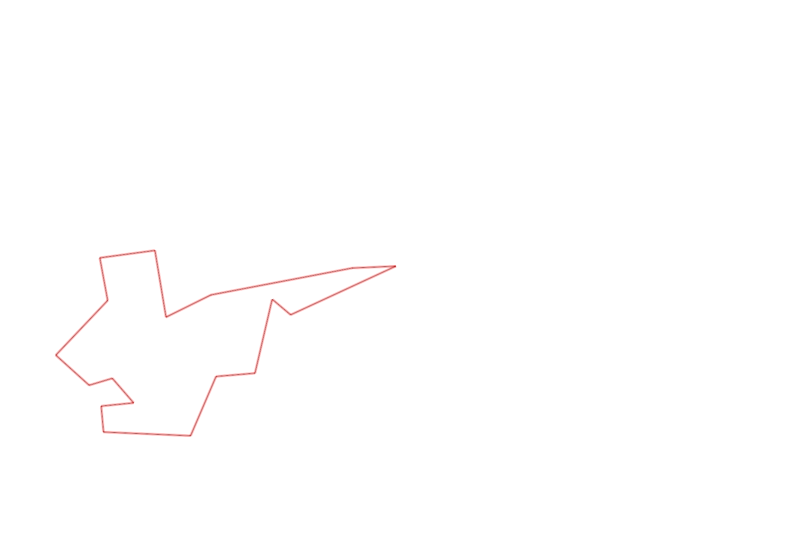
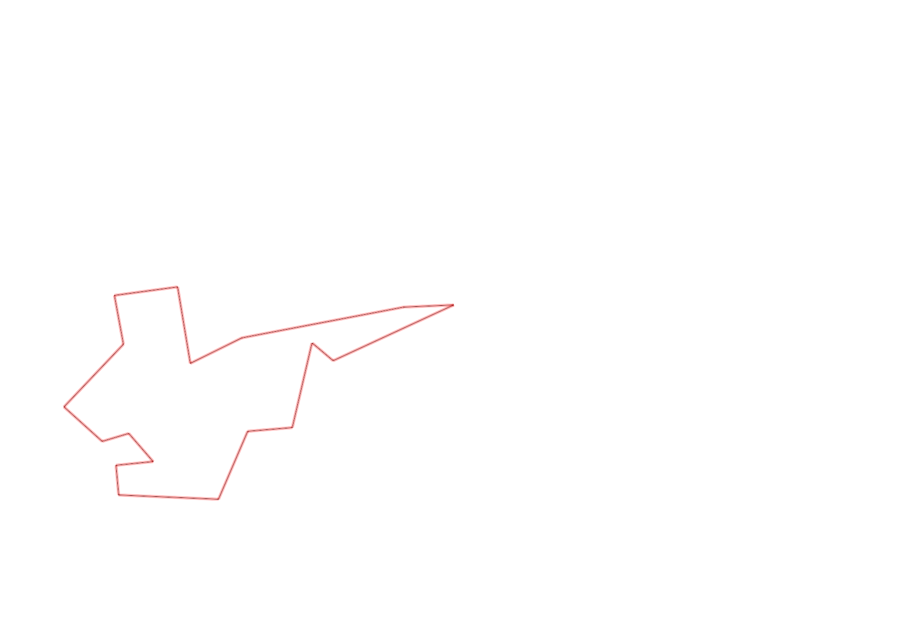

| Control |
Points |
Time Punched |
Distance |
Your Time |
Pace |
Place |
Fastest Time |
Median Time |
% Behind Fastest |
| 38 |
30 |
|
0.2 |
0:01:17 |
06:25 |
3 / 3 |
0:00:43 |
0:00:54 |
79% |
| 60 |
60 |
|
0.11 |
0:01:11 |
10:45 |
14 / 19 |
0:00:42 |
0:00:57 |
69% |
| 59 |
50 |
|
0.17 |
0:04:13 |
24:48 |
3 / 5 |
0:02:02 |
0:04:13 |
107% |
| 40 |
40 |
|
0.24 |
0:05:50 |
24:18 |
2 / 2 |
0:02:35 |
0:04:12 |
125% |
| 71 |
70 |
|
0.07 |
0:01:27 |
20:42 |
9 / 12 |
0:00:34 |
0:01:00 |
155% |
| 41 |
40 |
|
0.09 |
0:01:33 |
17:13 |
3 / 8 |
0:00:47 |
0:01:39 |
97% |
| 54 |
50 |
|
0.09 |
0:02:09 |
23:53 |
7 / 8 |
0:00:57 |
0:01:28 |
126% |
| 69 |
60 |
|
0.07 |
0:03:33 |
50:42 |
17 / 20 |
0:01:00 |
0:01:56 |
254% |
| 53 |
50 |
|
0.12 |
0:02:11 |
18:11 |
22 / 26 |
0:01:16 |
0:01:51 |
72% |
| 44 |
40 |
|
0.2 |
0:01:53 |
09:25 |
15 / 22 |
0:00:39 |
0:01:40 |
189% |
| 32 |
30 |
|
0.12 |
0:02:18 |
19:10 |
17 / 22 |
0:00:43 |
0:01:19 |
220% |
| 63 |
60 |
|
0.15 |
0:02:05 |
13:53 |
21 / 25 |
0:01:05 |
0:01:29 |
92% |
| 130 |
30 |
|
0.18 |
0:01:57 |
10:50 |
1 / 1 |
0:01:57 |
0:01:57 |
0% |
| 126 |
20 |
|
0.14 |
0:01:48 |
12:51 |
10 / 12 |
0:01:09 |
0:01:26 |
56% |
| 92 |
90 |
|
0.39 |
0:07:53 |
20:12 |
1 / 1 |
0:07:53 |
0:07:53 |
0% |
| 47 |
40 |
|
0.12 |
0:02:02 |
16:56 |
3 / 16 |
0:01:07 |
0:04:40 |
82% |
| 127 |
20 |
|
0.31 |
0:08:20 |
26:52 |
1 / 1 |
0:08:20 |
0:08:20 |
0% |
| Finish |
0 |
|
0.06 |
0:00:46 |
12:46 |
6 / 8 |
-1 day, 23:05:57 |
0:00:35 |
-99% |
Total Distance Covered: 2.83km
Points Scored: 780
Late Penalty: 0
Final Score: 780
Total Time: 0hours 52minutes 26seconds
Efficiency: 275.62 points/km
 
